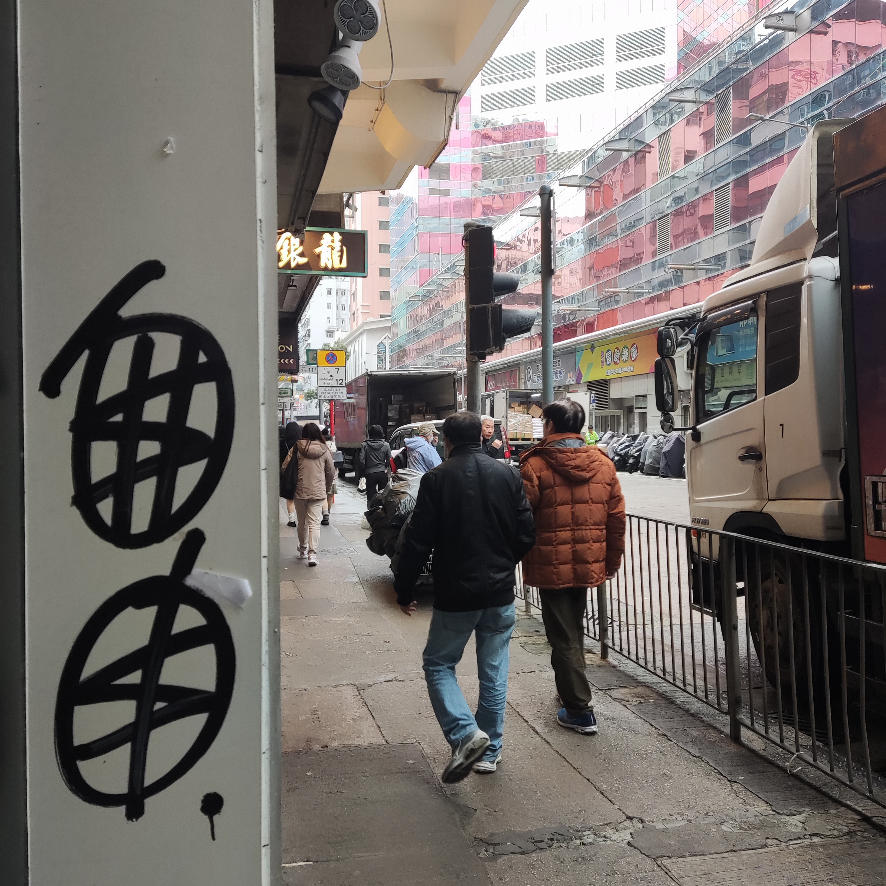
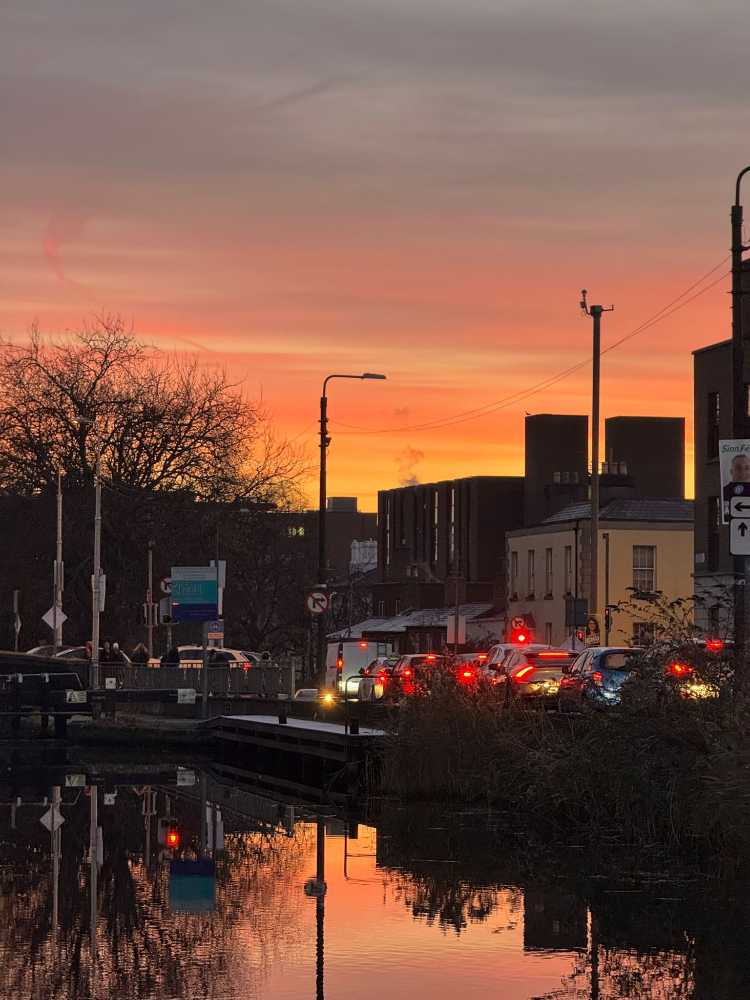

【2024】这一年，我狂按人生加速键。
“落叶归根的是肥料和耗材，落叶生根的是种子和希望。”
前言
“当你离开那片土地，就应该要明白，你要做的不是落叶归根，而是落地生根，落叶归根的是肥料和耗材，落叶生根的是种子和希望。” —— 李显龙
从北京到上海，从上海到都柏林。我狂按人生加速按钮，终于获得了平静与自由。
回望
结婚
这可能是我2024年做过最酷的一件事情。
不敢相信，一切这么快，我终于结婚了。
移民
差不多就是刚好一年前，2023年的圣诞节。
和女朋友还没有结婚，我出差在香港，女朋友出差在河南，那时候我们工作都非常忙，生活压的我们透不过气。
我们在香港中环的摩天轮上，看到了维多利亚港的圣诞烟花，那一刻，仿佛我们都在生活中长叹一声，得到了一丝喘息和慰藉。
那几天她病了，好像是新冠。那晚的中环超级冷，上海也是，邻居打来电话，说楼道里的消防栓冻裂了，水从二十楼六一直漏到了一楼，我们住二十楼六。打开家里的网络摄像头，一片模糊看不清门口的情况，两只猫还在家里，我们又皱起了眉。
白天，我们在香港街头游荡，那天，我留下了一条坐标在香港的朋友圈。
“十年前来香港考试。 多元，开放，自由，自信，秩序给我带来了极大冲击和震撼。 人们在街头，地铁口表达着不同的想法和意见，相互制约，一个社会竟然能这样运转。 十年前，旺角铜锣湾，霓虹闪烁，纸醉金迷，一切和想象中，和港剧中的样子一模一样。 十年后再度来港，同样给我带来了巨大震撼。 不知什么时候开始，香港已经和内地城市相差无几。霓虹灯不见了，地铁口的不同声音不见了，香港的自信也不见了：他们害怕一句口号，一个手势，一首歌曲，一场纪念，一张白纸。 这里只剩下了一种声音，因为这是最好的年代。”

我们被这种生活裹挟着，一步也不能停，一步也不能错，我想是时候做一个改变或者了断了。
我们决定，是时候离开这里了，火车头已经掉下悬崖，就没必要等到时候再跳车了。
巨变
当时我一定不会想到，2024年的的圣诞节，我们会在欧洲度过，并且这里可能是我未来几年常住，或者永远居住的城市。
我曾经在北京国贸地铁站，看见汹涌的人潮，荡来荡去，憧憬未来。也曾经在上海外滩看见浦东灯光璀璨，浦西的纸醉金迷。但始终有一种对为未来迷茫和焦虑伴随着我们。
我一直以为：去了一线城市就好了，距离文明和自由更近了；落了上海户口就好了，就有归属感了；买了房就好了，就会在这个城市彻底站稳脚了；还完房贷就轻松了，就没那么大压力了；
可是这是结构性的困局，我们逃不掉，身在这个巨大的“绞肉机”之中，如果无法成为这个城市，或者这个国家的既得利益者，没有人能独善其身，保全自己。
我只得狂按加速键，曾经打算在35岁之前，在所谓IT行业年龄危机之前完成移民，现在必须要加快脚步了。
而如你所见，我足够幸运，成功离开了。
倘若不是迈出这一步，我不会早九晚五，规律的生活。
倘若不是迈出这一步，我不会在傍晚的利菲河旁漫步。
倘若不是迈出这一步，我不会和各国的同事在酒吧中，手握Guinness畅谈到午夜零点。
倘若不是迈出这一步，我不会在美丽的悬崖上享受一刻的平静。
倘若不是迈出这一步，我不可能在上班的路上看到这么美的朝霞。
倘若不是迈出这一步，我也无法静下心来，坐在这里，平静的写下着这篇博文。
唯自由无价。

2025
下一年，希望有如下进步：
- 自由，健康，快乐。
- 英文有所提升。
- 工作能稳定顺利。
- 能持续更新这个博客。
- 买一辆代步车。
- 看更多的书。